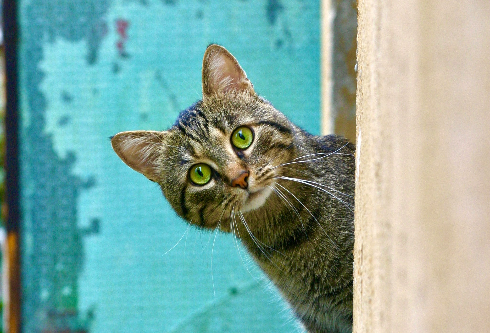

This website is has some subtext that goes here under the main title. It's a smaller font and the color is lower contrast

Some random information.
This is some subtext under an illustration or image
This is some subtext under an illustration or image
This is some subtext under an illustration or image
This is some subtext under an illustration or image
“y los gatos, siempre inevitablemente los minouche morrongos miaumiau kitten kat chat cat gatto grises y blancos y negros y de albañal, dueños del tiempo y de las baldosas tibias”
- Julio Cortázar, Rayuela
Call to action! It's time!
Sign up for our product by clicking that button right over there!